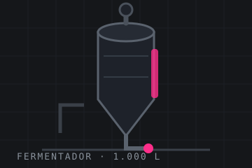
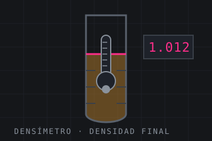
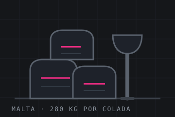

Obrador de cerveza · Betanzos · A Coruña · desde 2017
Mil doscientos litros por colada y ninguna prisa
Somos fábrica, no bar. Molemos, maceramos, cocemos, fermentamos y envasamos aquí mismo, en una nave de Betanzos, en lotes pequeños que llevan escrito el día que se hicieron.
- Colada
- 1.200 litros
- Lotes al año
- 18, numerados
- Tienda del obrador
- jueves y viernes · sábado por la mañana
+18 Contenido sobre bebidas alcohólicas. No vendemos ni servimos a menores de 18 años.
01 El proceso
Cinco recipientes y una cerveza que va cambiando de casa
Trasfegar es pasar el líquido de un sitio a otro dejando atrás lo que sobra. Entre el saco de malta y la lata, esta cerveza lo hace cinco veces. Baja y míralo.
-
Paso 01
Molienda
Doscientos ochenta kilos de malta de cebada pasan por el molino la víspera. No se muele fino: la cáscara tiene que quedar entera porque luego hace de filtro.
-
Paso 02
Maceración
Malta y agua a 67 grados durante una hora. Aquí el almidón se convierte en azúcar y se decide si la cerveza va a ser seca o con cuerpo.
-
Paso 03
Cocción
Setenta y cinco minutos hirviendo. El lúpulo entra en tres tandas: la primera pone el amargor, la última, el aroma. Es la parte que huele desde la calle.
-
Paso 04
Fermentación y guarda
Doce días a 19 grados con la levadura trabajando, y otras dos semanas en frío. Es el tramo largo y el que no se puede acortar sin que se note.
-
Paso 05
Envasado
Lata de 44 cl y barril de 20 litros, con el número de lote y la fecha impresos. Sin filtrar y sin pasteurizar: por eso pedimos que se guarde en frío.
Paso 01 · Molienda
02 Las cervezas
Cuatro fijas y lo que salga
Cada lote lleva su número y su fecha de envasado. Los datos de abajo —graduación, amargor y color— son los de la última colada de cada una; cambian un poco de lote a lote y por eso van escritos en la lata, no solo aquí.
-
Lote 2026-014
Trasfega Clara
Lager sin filtrar
Cuatro semanas de guarda en frío. La que se bebe en el obrador mientras se limpia el macerador.
- Alcohol
- 4,6 %
- Amargor
- 22 IBU
- Envasado
- 12/09/2026
-
Lote 2026-011
Bocoi
Ale ámbar
Maltas tostadas y poco lúpulo. Es la que mejor aguanta el invierno y la que más piden en barril.
- Alcohol
- 5,4 %
- Amargor
- 30 IBU
- Envasado
- 28/08/2026
-
Lote 2026-016
Corenta
IPA de sesión
Tres tandas de lúpulo y cuarenta minutos de reposo antes de enfriar. Amarga, pero se puede tomar más de una.
- Alcohol
- 4,2 %
- Amargor
- 42 IBU
- Envasado
- 19/09/2026
-
Lote 2026-009
Noite Pecha
Stout seca
Cebada tostada y avena. Negra de verdad, con espuma que se queda pegada al vaso hasta el final.
- Alcohol
- 5,1 %
- Amargor
- 36 IBU
- Envasado
- 02/08/2026
-
Lote 2026-017
Vendima
De temporada · otoño
Con mosto de uva de una viña de la comarca, fermentada aparte. Se hacen 600 litros y no se repite hasta el año siguiente.
- Alcohol
- 6,2 %
- Amargor
- 18 IBU
- Envasado
- 26/09/2026
-
Lote 2026-004
Herbal
De temporada · primavera
Trigo y hierbas del monte añadidas al final de la cocción. Turbia a propósito y muy suave.
- Alcohol
- 4,4 %
- Amargor
- 14 IBU
- Envasado
- 11/04/2026
03 El obrador
Una nave, cuatro tanques y una manguera
Cuatrocientos metros cuadrados en el polígono, suelo con pendiente hacia el sumidero y mucho acero inoxidable. La mitad del trabajo de un obrador es limpiar: el día de colada empieza a las seis de la mañana y acaba fregando lo que se ha usado.
- litros por colada
- 1200
- fermentadores
- 4
- lotes al año
- 18
- horas de colada
- 9
-

Lois Carreira
Cervecero · coladas y recetas
Monta la receta, hace la colada y decide cuándo está lista. Si la respuesta a algo es «una semana más», suele ser suya.
-

Sabela Paz
Control y envasado
Lleva las densidades, los registros de cada lote y la línea de latas. Es quien pone el número que acaba impreso en el envase.
-

Xurxo Deibe
Almacén, reparto y visitas
Descarga la malta, reparte los barriles por la comarca y guía las visitas de los sábados. Conoce a todos los hosteleros por el nombre del perro.
04 Visitas
Ver una colada por dentro
Una hora y cuarto por la nave, con el ruido del molino incluido, y una cata de tres cervezas al final. Precios de muestra inventados para esta demostración.
-
Visita guiada
12€ por persona
- Sábados a las 11:30
- 75 minutos, aforo de 14
- Cata de tres cervezas al final
- Mayores de 18 años
-
Día de colada
Colada abierta
25€ por persona
- Un jueves al mes, de 9:00 a 13:00
- Aforo de 6, con botas y delantal
- Se muele, se macera y se friega
- Te llevas una lata del lote anterior
-
Sin cata
6€ por persona
- La misma visita, sin cerveza
- Para quien conduce
- Menores acompañados, sin cata
- Refresco de la casa incluido
05 Dónde está
En la tienda del obrador y poco más
No vendemos por internet ni estamos en supermercados. Es una decisión, no una pena: sin filtrar y sin pasteurizar, la cerveza tiene que viajar en frío y poco.
-
01
Tienda del obrador
Jueves y viernes de 17:00 a 20:30 y sábados de 11:00 a 14:30. Lata suelta, caja de doce y barril con fianza del grifo.
-
02
Mercado de Betanzos
Primer sábado de cada mes por la mañana, con una mesa y una nevera. Suele acabarse la Corenta antes de las doce.
-
03
Hostelería de la comarca
Repartimos barril a bares de la zona los martes. No publicamos la lista: cambia cada mes y preferimos que preguntes en la barra.
-
04
Pedidos de barril
Para hostelería, con dos días de aviso. Grifo y enfriador en préstamo mientras haya barril nuestro conectado.
06 Preguntas
Lo que se pregunta en la nave
¿Se puede beber en el obrador?
Solo la cata de la visita. No somos un bar ni tenemos licencia de hostelería: no hay barra, no hay mesas y no se sirven consumiciones sueltas.
¿Por qué está turbia?
Porque no se filtra. Lo que ves en suspensión es levadura y proteína del propio proceso. Se puede dejar el último dedo en la lata si molesta.
¿Cuánto dura una lata?
Cuatro meses desde la fecha de envasado, guardada en frío. La fecha va impresa junto al número de lote. Pasado ese tiempo no es peligrosa, pero pierde el aroma del lúpulo.
¿Hacéis cerveza sin alcohol o sin gluten?
Sin alcohol, no. Sin gluten, tampoco: trabajamos con cebada y trigo en la misma nave y no podríamos garantizar la ausencia de trazas.
¿Vendéis a menores?
No. Ni en la tienda, ni en el mercado, ni en las visitas con cata. En la visita sin cata pueden entrar menores acompañados de un adulto.
¿Se puede hacer una cerveza para un evento?
Sí, con tres meses de antelación y un mínimo de 600 litros. La receta se decide entre los dos y el lote sale con su número, como todos.
07 Pedidos y contacto
Escríbenos y te contamos qué hay
Para hostelería, pedidos grandes o una visita a medida. Si es para llevarte una caja, basta con pasarte en horario de tienda.
- Obrador y tienda
- Rúa do Bocoi 4
15300 Betanzos · A Coruña - Teléfono
- 981 00 00 00
Número de muestra: no funciona. - Correo
- obrador@trasfega.example
- Tienda
- Jueves y viernes 17:00 – 20:30
Sábado 11:00 – 14:30 - Visitas
- Sábados 11:30 · colada abierta un jueves al mes
El mapa no se carga hasta que lo pides: así esta página no pone cookies de terceros por su cuenta. La dirección es inventada, así que el mapa muestra la localidad, no una calle concreta.